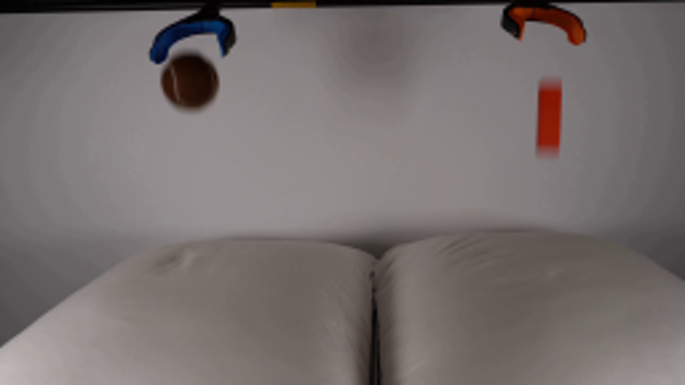
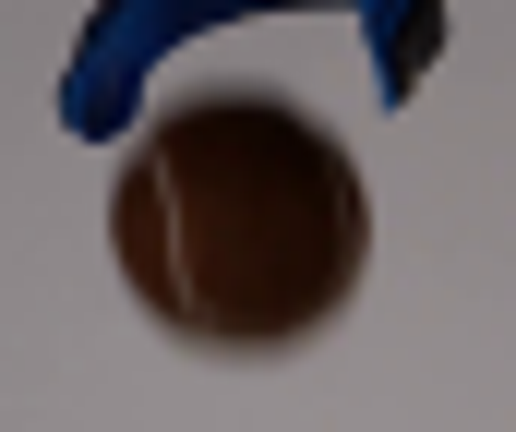
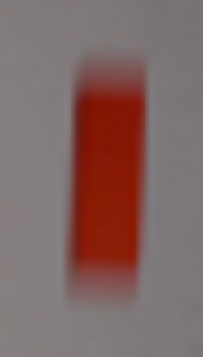
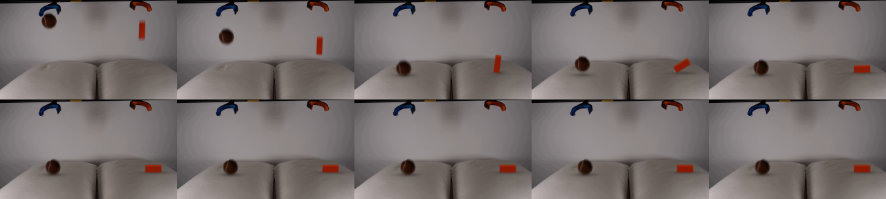
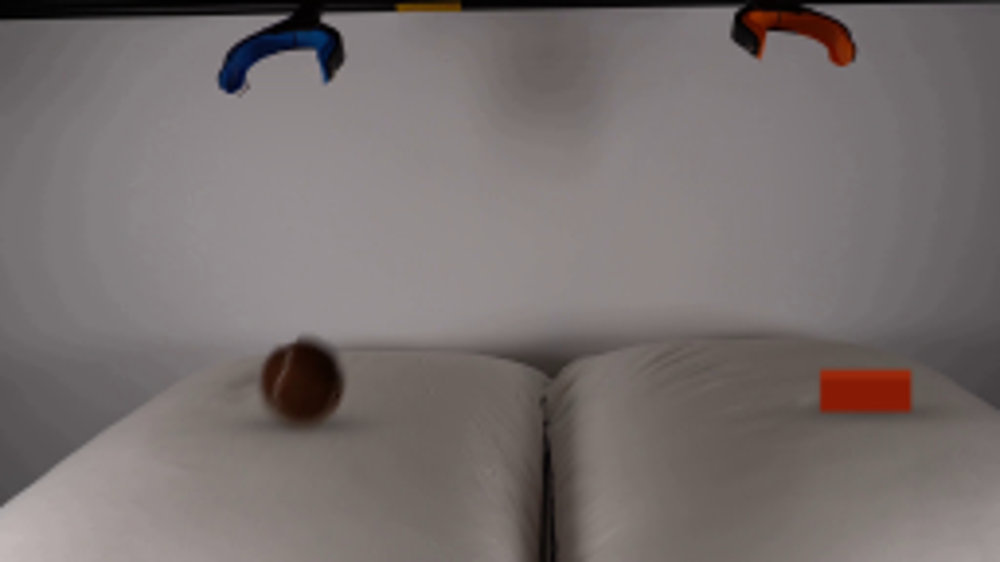
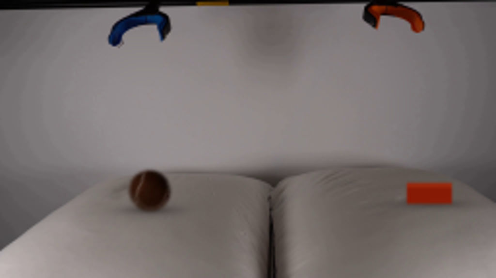

CODING AGENTS AS PIXEL WORLD MODELS
traex/GPT-6-Astra · 0002
点击播放 · 原生 RGB 像素
逐轮保存的候选
回放视频、检查图与代码变化。
每份候选均可单独播放。实际图片检查记录在下方工具轨迹中。
候选 01播放与检查图
点击播放 · 原生 RGB 像素
展开代码变化
--- 上一保存版本
+++ 本次保存版本
@@ -0,0 +1,205 @@
+from pathlib import Path
+import numpy as np
+from PIL import Image, ImageDraw
+from scipy.ndimage import gaussian_filter, map_coordinates
+import cv2
+import artifact_io
+
+ROOT=Path(__file__).resolve().parent
+W,H=256,144
+SRC=np.asarray(Image.open(ROOT/'first_frame.png').convert('RGB')).astype(np.float64)
+Y,X=np.mgrid[:H,:W].astype(float)
+
+# Reconstruct only the small pieces of the neutral backdrop uncovered by release.
+def wall_fit(x0,y0,x1,y1,exclude):
+ sample=(X>=x0)&(X<=x1)&(Y>=y0)&(Y<=y1)&~exclude
+ xx=(X-0.5*(x0+x1))/30; yy=(Y-0.5*(y0+y1))/30
+ basis=np.stack([np.ones_like(X),xx,yy,xx*xx,xx*yy,yy*yy],-1)
+ coeff=np.linalg.lstsq(basis[sample],SRC[sample],rcond=None)[0]
+ return basis@coeff
+
+ball_region=((X-70.8)/13.6)**2+((Y-30.6)/14.0)**2<1
+blue=(SRC[:,:,2]>SRC[:,:,0]+11)&(Y<25)
+blue_guard=cv2.dilate(blue.astype('uint8'),np.ones((3,3),np.uint8)).astype(bool)
+ball_region &= ~blue_guard
+exclude=ball_region|blue_guard|(Y<24)
+ball_wall=wall_fit(49,17,97,51,exclude)
+block_region=(X>=198)&(X<=212)&(Y>=26)&(Y<=62)
+block_wall=wall_fit(183,23,226,70,block_region)
+CLEAN=SRC.copy()
+# A short smooth transition avoids a visible perimeter in the reconstructed wall.
+for region,wall in [(ball_region,ball_wall),(block_region,block_wall)]:
+ blend=gaussian_filter(region.astype(float),.55)
+ blend[region]=1
+ if wall is ball_wall: blend[blue_guard]=0
+ CLEAN=CLEAN*(1-blend[:,:,None])+wall*blend[:,:,None]
+CLEAN=np.clip(CLEAN,0,255)
+
+# Matte the actual photographed ball, retaining its felt and seam.
+r=np.sqrt(((X-70.8)/10.7)**2+((Y-30.7)/10.55)**2)
+atten=np.max((ball_wall-SRC)/np.maximum(ball_wall-np.array([53,33,24]),30),axis=2)
+alpha=np.clip(atten,0,1)
+alpha=np.maximum(alpha,np.clip((.97-r)/.14,0,1))
+alpha*=ball_region
+alpha[(r>1.30)]=0
+alpha[alpha<.025]=0
+BALL_ALPHA=alpha
+BALL_PRE=np.clip(SRC-ball_wall*(1-alpha[:,:,None]),0,255)* (alpha>0)[:,:,None]
+# Very faint residual background color outside the matte is not part of the ball.
+BALL_PRE=np.minimum(BALL_PRE,alpha[:,:,None]*255)
+
+G=390.; V=42.
+BALL_R=10.65; BALL_FLOOR=107.7
+BALL_START=30.7
+TC_B=(-V+np.sqrt(V*V+2*G*(BALL_FLOOR-BALL_R-BALL_START)))/G
+TC_C=(-V+np.sqrt(V*V+2*G*(103.0-55.0)))/G
+
+def smooth(t):
+ t=np.clip(t,0,1)
+ return t*t*(3-2*t)
+
+def ball_state(t):
+ if t<TC_B:
+ return 70.8+.65*t, BALL_START+V*t+.5*G*t*t, 0.,0.,1.,1.
+ u=t-TC_B
+ rest=BALL_FLOOR-BALL_R
+ if u<.095:
+ dep=5.0*np.sin(np.pi*u/.095)
+ yy=rest+dep
+ sx=1+.025*dep/5; sy=1-.026*dep/5
+ elif u<.095+112/G:
+ q=u-.095
+ yy=rest-56*q+.5*G*q*q
+ dep=1.0*np.exp(-q/0.12)
+ sx=sy=1.
+ else:
+ q=u-(.095+112/G)
+ dep=1.35*smooth(q/.13)+.38*np.sin(q*27)*np.exp(-q*15)
+ yy=rest+dep
+ sx=sy=1.
+ roll=5.8*(1-np.exp(-max(0,u-.14)*3.2))
+ return 71.1+roll, yy, dep, roll/BALL_R, sx,sy
+
+def block_state(t):
+ if t<TC_C:
+ return 209.,55+V*t+.5*G*t*t,.040+.025*t,0.
+ u=t-TC_C
+ # First the lower end loads the fabric; then the long axis tips to the right.
+ theta=.05+(np.pi/2-.05)*smooth((u-.025)/.55)
+ if u>.575:
+ q=u-.575
+ theta=np.pi/2-.045*np.exp(-q*12)*max(0,np.sin(q*30))
+ dep=1.0+2.2*np.exp(-u*16)*np.sin(u*24)
+ pivot=209.+.9*smooth(u/.5)
+ return pivot,103.+dep,theta,dep
+
+
+def pillow_plate(t):
+ bx,by,bd,ang,sx,sy=ball_state(t)
+ px,py,theta,cd=block_state(t)
+ end_x=px+11.5*np.sin(theta)-4*np.cos(theta)
+ ball_weight=smooth((t-TC_B+.035)/.10) if t>=TC_B-.035 else 0
+ # The cloth moves down into a small compliant socket and relaxes after impact.
+ dep_b=max(0,bd)*ball_weight
+ q=(X-bx)/15.5; z=(Y-BALL_FLOOR)/9.0
+ gb=np.exp(-.5*(q*q+z*z))
+ surface_gate=smooth((Y-90)/9)
+ q2=(X-end_x)/(9+8*np.sin(theta)); z2=(Y-105)/7
+ gc=np.exp(-.5*(q2*q2+z2*z2))
+ dc=max(0,cd) if t>=TC_C else 0
+ d=(dep_b*gb+dc*.65*gc)*surface_gate
+ map_y=(Y-d*.72).astype('float32')
+ map_x=(X+.09*dep_b*gb*(X-bx)/12).astype('float32')
+ img=cv2.remap(CLEAN.astype('float32'),map_x,map_y,cv2.INTER_CUBIC,borderMode=cv2.BORDER_REFLECT).astype(float)
+ # Low-relief fabric shading around each load, not an artificial hole.
+ shade=-.025*dep_b*gb-.019*dc*gc
+ shade+=.015*dep_b*np.exp(-.5*((q/1.35)**2+((z-.8)/.55)**2))
+ img*=1+shade[:,:,None]*surface_gate[:,:,None]
+ # Contact and cast shadows shrink and deepen as the objects approach the cloth.
+ bbottom=by+BALL_R
+ alt=max(0,BALL_FLOOR-bbottom)
+ strength=.23*np.exp(-alt/24)
+ shadow=np.exp(-.5*(((X-bx-1.4)/(10.8+alt*.11))**2+((Y-BALL_FLOOR-.6)/(2.45+alt*.04))**2))
+ img*=1-(strength*shadow*surface_gate)[:,:,None]
+ if t>=TC_B:
+ contact=np.exp(-.5*(((X-bx)/8.3)**2+((Y-BALL_FLOOR-dep_b*.45)/1.15)**2))
+ img*=1-(.17*contact*surface_gate)[:,:,None]
+ block_alt=max(0,103-py)
+ cs=.24*np.exp(-block_alt/20)
+ shadow=np.exp(-.5*(((X-end_x-1)/(5.3+9*np.sin(theta)+block_alt*.08))**2+((Y-105.1)/(1.65+block_alt*.04))**2))
+ img*=1-(cs*shadow*surface_gate)[:,:,None]
+ return np.clip(img,0,255)
+
+
+def draw_ball(img,t):
+ bx,by,dep,angle,sx,sy=ball_state(t)
+ c=np.cos(angle); s=np.sin(angle)
+ dx=(X-bx)/sx; dy=(Y-by)/sy
+ xx=70.8+c*dx+s*dy
+ yy=30.7-s*dx+c*dy
+ coords=np.array([yy,xx])
+ a=map_coordinates(BALL_ALPHA,coords,order=1,mode='constant',cval=0)
+ p=np.stack([map_coordinates(BALL_PRE[:,:,i],coords,order=1,mode='constant',cval=0) for i in range(3)],axis=-1)
+ return img*(1-a[:,:,None])+p
+
+S=4
+YY,XX=np.mgrid[:H*S,:W*S].astype(float)/S
+
+def draw_block(img,t):
+ px,py,theta,dep=block_state(t)
+ c=np.cos(theta); s=np.sin(theta)
+ vertices=[]; heights=[]; depths=[]
+ for d in [-3.,3.]:
+ for h in [0.,23.]:
+ for x in [-8.,0.]:
+ ax=x*c+h*s; hh=-x*s+h*c
+ vertices.append((px+ax,py-hh+.40*d))
+ heights.append(hh);depths.append(d)
+ vertices=np.asarray(vertices)
+ # Index ordering: depth, height, transverse coordinate.
+ faces=[([0,1,3,2],(113,23,4)),([0,2,6,4],(153,40,12)),
+ ([1,5,7,3],(100,20,4)),([2,3,7,6],(155,46,17)),
+ ([0,4,5,1],(102,21,3)),([4,6,7,5],(134,26,5))]
+ faces.sort(key=lambda f:np.mean([depths[k]+.4*heights[k] for k in f[0]]))
+ rgb=np.zeros((H*S,W*S,3),np.float32); a=np.zeros((H*S,W*S),np.float32)
+ for indices,col in faces:
+ poly=np.round(vertices[indices]*S).astype(np.int32)
+ cv2.fillConvexPoly(rgb,poly,tuple(float(x) for x in col),lineType=cv2.LINE_AA)
+ cv2.fillConvexPoly(a,poly,1.,lineType=cv2.LINE_AA)
+ # Subtle surface illumination and photographic optical softness.
+ center=np.mean(vertices,axis=0)
+ variation=np.clip((YY-center[1])*.22+(XX-center[0])*.03,-3,3)
+ rgb+=a[:,:,None]*variation[:,:,None]*np.array([1,.65,.35])
+ rgb=gaussian_filter(rgb,(1.6,1.35,0))
+ a=gaussian_filter(a,(1.6,1.35))
+ rgb=cv2.resize(rgb,(W,H),interpolation=cv2.INTER_AREA)
+ a=cv2.resize(a,(W,H),interpolation=cv2.INTER_AREA)
+ return img*(1-a[:,:,None])+rgb
+
+
+def render(t):
+ plate=pillow_plate(t)
+ # Real-time, fixed shutter: short continuous motion trails, never ghost images.
+ if t<1.12:
+ offsets=np.linspace(-.012,.012,5)
+ else:
+ offsets=[0]
+ total=np.zeros_like(plate)
+ for dt in offsets:
+ tt=max(0,t+dt)
+ total+=draw_block(draw_ball(plate.copy(),tt),tt)
+ return np.clip(np.rint(total/len(offsets)),0,255).astype(np.uint8)
+
+
+def main():
+ frames=[SRC.astype(np.uint8)]
+ for i in range(1,20):
+ frames.append(render(i/4))
+ frames=np.stack(frames)
+ artifact_io.save(frames,ROOT)
+ Image.fromarray(CLEAN.astype(np.uint8)).save(ROOT/'.tmp'/'clean.png')
+ im=Image.new('RGB',(256*5,144*2))
+ for i in range(10): im.paste(Image.fromarray(frames[i]),((i%5)*256,(i//5)*144))
+ im.save(ROOT/'.tmp'/'early.png')
+
+if __name__=='__main__': main()
候选 02播放与检查图
点击播放 · 原生 RGB 像素
展开代码变化
--- 上一保存版本
+++ 本次保存版本
@@ -1,7 +1,8 @@
from pathlib import Path
import numpy as np
from PIL import Image, ImageDraw
-from scipy.ndimage import gaussian_filter, map_coordinates
+from scipy.ndimage import gaussian_filter, map_coordinates, distance_transform_edt
+from scipy.special import erfc
import cv2
import artifact_io
@@ -47,6 +48,15 @@
BALL_PRE=np.clip(SRC-ball_wall*(1-alpha[:,:,None]),0,255)* (alpha>0)[:,:,None]
# Very faint residual background color outside the matte is not part of the ball.
BALL_PRE=np.minimum(BALL_PRE,alpha[:,:,None]*255)
+# The initial image has a brief vertical exposure trail. On the resting ball,
+# retain the photographed felt but recover the round silhouette, not that trail.
+recovered=BALL_PRE/np.maximum(alpha[:,:,None],1e-5)
+valid=(alpha>.84)&(r<.95)
+nearest=distance_transform_edt(~valid,return_distances=False,return_indices=True)
+colors=recovered[nearest[0],nearest[1]]
+colors[valid]=recovered[valid]
+BALL_ALPHA=.5*erfc((r-1)*10.6/(.70*np.sqrt(2)))
+BALL_PRE=colors*BALL_ALPHA[:,:,None]
G=390.; V=42.
BALL_R=10.65; BALL_FLOOR=107.7
@@ -170,8 +180,8 @@
center=np.mean(vertices,axis=0)
variation=np.clip((YY-center[1])*.22+(XX-center[0])*.03,-3,3)
rgb+=a[:,:,None]*variation[:,:,None]*np.array([1,.65,.35])
- rgb=gaussian_filter(rgb,(1.6,1.35,0))
- a=gaussian_filter(a,(1.6,1.35))
+ rgb=gaussian_filter(rgb,(2.15,1.85,0))
+ a=gaussian_filter(a,(2.15,1.85))
rgb=cv2.resize(rgb,(W,H),interpolation=cv2.INTER_AREA)
a=cv2.resize(a,(W,H),interpolation=cv2.INTER_AREA)
return img*(1-a[:,:,None])+rgb
候选 03播放与检查图
可观测工具轨迹
实际执行的命令与返回图片。
命令 1exit 0
/bin/bash -lc 'ls -la && cat prompt.txt && cat GENERATION_RULES.md'
命令 2exit 0
/bin/bash -lc "cat artifact_io.py && python - <<'PY'
from PIL import Image
im=Image.open('first_frame.png'); print(im.size,im.mode); im.resize((1024,576)).save('.tmp/first_up.png')
PY"命令 3exit 0
/bin/bash -lc "python - <<'PY'
import importlib.util
for m in ['numpy','PIL','scipy','cv2']:
print(m, bool(importlib.util.find_spec(m)))
from PIL import Image
im=Image.open('first_frame.png'); im.crop((51,12,94,48)).resize((516,432)).save('.tmp/ball.png');im.crop((192,22,217,66)).resize((250,440)).save('.tmp/block.png')
PY"命令 4exit 0
/bin/bash -lc "python - <<'PY'
from PIL import Image
import numpy as np
im=np.array(Image.open('first_frame.png'))
for y in [17,18,19,20,21,22,24,26,28,31,34,37,39,41,43,45]:
print(y, ['%d:%s'%(x,','.join(map(str,im[y,x]))) for x in [57,59,60,61,63,65,67,69,71,75,79,81,83,85,87]])
PY"命令 5exit 0
/bin/bash -lc "python - <<'PY'
from PIL import Image
import numpy as np
im=np.array(Image.open('first_frame.png'))
for y in [29,31,33,35,40,45,50,54,56,59]:
print(y, im[y,200:211].tolist())
PY"命令 6exit 0
/bin/bash -lc "cat > generate.py <<'PY'
from pathlib import Path
import numpy as np
from PIL import Image, ImageDraw
from scipy.ndimage import gaussian_filter, map_coordinates
import cv2
import artifact_io
ROOT=Path(__file__).resolve().parent
W,H=256,144
SRC=np.asarray(Image.open(ROOT/'first_frame.png').convert('RGB')).astype(np.float64)
Y,X=np.mgrid[:H,:W].astype(float)
# Reconstruct only the small pieces of the neutral backdrop uncovered by release.
def wall_fit(x0,y0,x1,y1,exclude):
sample=(X>=x0)&(X<=x1)&(Y>=y0)&(Y<=y1)&~exclude
xx=(X-0.5*(x0+x1))/30; yy=(Y-0.5*(y0+y1))/30
basis=np.stack([np.ones_like(X),xx,yy,xx*xx,xx*yy,yy*yy],-1)
coeff=np.linalg.lstsq(basis[sample],SRC[sample],rcond=None)[0]
return basis@coeff
ball_region=((X-70.8)/13.6)**2+((Y-30.6)/14.0)**2<1
blue=(SRC[:,:,2]>SRC[:,:,0]+11)&(Y<25)
blue_guard=cv2.dilate(blue.astype('uint8'),np.ones((3,3),np.uint8)).astype(bool)
ball_region &= ~blue_guard
exclude=ball_region|blue_guard|(Y<24)
ball_wall=wall_fit(49,17,97,51,exclude)
block_region=(X>=198)&(X<=212)&(Y>=26)&(Y<=62)
block_wall=wall_fit(183,23,226,70,block_region)
CLEAN=SRC.copy()
# A short smooth transition avoids a visible perimeter in the reconstructed wall.
for region,wall in [(ball_region,ball_wall),(block_region,block_wall)]:
blend=gaussian_filter(region.astype(float),.55)
blend[region]=1
if wall is ball_wall: blend[blue_guard]=0
CLEAN=CLEAN*(1-blend[:,:,None])+wall*blend[:,:,None]
CLEAN=np.clip(CLEAN,0,255)
# Matte the actual photographed ball, retaining its felt and seam.
r=np.sqrt(((X-70.8)/10.7)**2+((Y-30.7)/10.55)**2)
atten=np.max((ball_wall-SRC)/np.maximum(ball_wall-np.array([53,33,24]),30),axis=2)
alpha=np.clip(atten,0,1)
alpha=np.maximum(alpha,np.clip((.97-r)/.14,0,1))
alpha*=ball_region
alpha[(r>1.30)]=0
alpha[alpha<.025]=0
BALL_ALPHA=alpha
BALL_PRE=np.clip(SRC-ball_wall*(1-alpha[:,:,None]),0,255)* (alpha>0)[:,:,None]
# Very faint residual background color outside the matte is not part of the ball.
BALL_PRE=np.minimum(BALL_PRE,alpha[:,:,None]*255)
G=390.; V=42.
BALL_R=10.65; BALL_FLOOR=107.7
BALL_START=30.7
TC_B=(-V+np.sqrt(V*V+2*G*(BALL_FLOOR-BALL_R-BALL_START)))/G
TC_C=(-V+np.sqrt(V*V+2*G*(103.0-55.0)))/G
def smooth(t):
t=np.clip(t,0,1)
return t*t*(3-2*t)
def ball_state(t):
if t<TC_B:
return 70.8+.65*t, BALL_START+V*t+.5*G*t*t, 0.,0.,1.,1.
u=t-TC_B
rest=BALL_FLOOR-BALL_R
if u<.095:
dep=5.0*np.sin(np.pi*u/.095)
yy=rest+dep
sx=1+.025*dep/5; sy=1-.026*dep/5
elif u<.095+112/G:
q=u-.095
yy=rest-56*q+.5*G*q*q
dep=1.0*np.exp(-q/0.12)
sx=sy=1.
else:
q=u-(.095+112/G)
dep=1.35*smooth(q/.13)+.38*np.sin(q*27)*np.exp(-q*15)
yy=rest+dep
sx=sy=1.
roll=5.8*(1-np.exp(-max(0,u-.14)*3.2))
return 71.1+roll, yy, dep, roll/BALL_R, sx,sy
def block_state(t):
if t<TC_C:
return 209.,55+V*t+.5*G*t*t,.040+.025*t,0.
u=t-TC_C
# First the lower end loads the fabric; then the long axis tips to the right.
theta=.05+(np.pi/2-.05)*smooth((u-.025)/.55)
if u>.575:
q=u-.575
theta=np.pi/2-.045*np.exp(-q*12)*max(0,np.sin(q*30))
dep=1.0+2.2*np.exp(-u*16)*np.sin(u*24)
pivot=209.+.9*smooth(u/.5)
return pivot,103.+dep,theta,dep
def pillow_plate(t):
bx,by,bd,ang,sx,sy=ball_state(t)
px,py,theta,cd=block_state(t)
end_x=px+11.5*np.sin(theta)-4*np.cos(theta)
ball_weight=smooth((t-TC_B+.035)/.10) if t>=TC_B-.035 else 0
# The cloth moves down into a small compliant socket and relaxes after impact.
dep_b=max(0,bd)*ball_weight
q=(X-bx)/15.5; z=(Y-BALL_FLOOR)/9.0
gb=np.exp(-.5*(q*q+z*z))
surface_gate=smooth((Y-90)/9)
q2=(X-end_x)/(9+8*np.sin(theta)); z2=(Y-105)/7
gc=np.exp(-.5*(q2*q2+z2*z2))
dc=max(0,cd) if t>=TC_C else 0
d=(dep_b*gb+dc*.65*gc)*surface_gate
map_y=(Y-d*.72).astype('float32')
map_x=(X+.09*dep_b*gb*(X-bx)/12).astype('float32')
img=cv2.remap(CLEAN.astype('float32'),map_x,map_y,cv2.INTER_CUBIC,borderMode=cv2.BORDER_REFLECT).astype(float)
# Low-relief fabric shading around each load, not an artificial hole.
shade=-.025*dep_b*gb-.019*dc*gc
shade+=.015*dep_b*np.exp(-.5*((q/1.35)**2+((z-.8)/.55)**2))
img*=1+shade[:,:,None]*surface_gate[:,:,None]
# Contact and cast shadows shrink and deepen as the objects approach the cloth.
bbottom=by+BALL_R
alt=max(0,BALL_FLOOR-bbottom)
strength=.23*np.exp(-alt/24)
shadow=np.exp(-.5*(((X-bx-1.4)/(10.8+alt*.11))**2+((Y-BALL_FLOOR-.6)/(2.45+alt*.04))**2))
img*=1-(strength*shadow*surface_gate)[:,:,None]
if t>=TC_B:
contact=np.exp(-.5*(((X-bx)/8.3)**2+((Y-BALL_FLOOR-dep_b*.45)/1.15)**2))
img*=1-(.17*contact*surface_gate)[:,:,None]
block_alt=max(0,103-py)
cs=.24*np.exp(-block_alt/20)
shadow=np.exp(-.5*(((X-end_x-1)/(5.3+9*np.sin(theta)+block_alt*.08))**2+((Y-105.1)/(1.65+block_alt*.04))**2))
img*=1-(cs*shadow*surface_gate)[:,:,None]
return np.clip(img,0,255)
def draw_ball(img,t):
bx,by,dep,angle,sx,sy=ball_state(t)
c=np.cos(angle); s=np.sin(angle)
dx=(X-bx)/sx; dy=(Y-by)/sy
xx=70.8+c*dx+s*dy
yy=30.7-s*dx+c*dy
coords=np.array([yy,xx])
a=map_coordinates(BALL_ALPHA,coords,order=1,mode='constant',cval=0)
p=np.stack([map_coordinates(BALL_PRE[:,:,i],coords,order=1,mode='constant',cval=0) for i in range(3)],axis=-1)
return img*(1-a[:,:,None])+p
S=4
YY,XX=np.mgrid[:H*S,:W*S].astype(float)/S
def draw_block(img,t):
px,py,theta,dep=block_state(t)
c=np.cos(theta); s=np.sin(theta)
vertices=[]; heights=[]; depths=[]
for d in [-3.,3.]:
for h in [0.,23.]:
for x in [-8.,0.]:
ax=x*c+h*s; hh=-x*s+h*c
vertices.append((px+ax,py-hh+.40*d))
heights.append(hh);depths.append(d)
vertices=np.asarray(vertices)
# Index ordering: depth, height, transverse coordinate.
faces=[([0,1,3,2],(113,23,4)),([0,2,6,4],(153,40,12)),
([1,5,7,3],(100,20,4)),([2,3,7,6],(155,46,17)),
([0,4,5,1],(102,21,3)),([4,6,7,5],(134,26,5))]
faces.sort(key=lambda f:np.mean([depths[k]+.4*heights[k] for k in f[0]]))
rgb=np.zeros((H*S,W*S,3),np.float32); a=np.zeros((H*S,W*S),np.float32)
for indices,col in faces:
poly=np.round(vertices[indices]*S).astype(np.int32)
cv2.fillConvexPoly(rgb,poly,tuple(float(x) for x in col),lineType=cv2.LINE_AA)
cv2.fillConvexPoly(a,poly,1.,lineType=cv2.LINE_AA)
# Subtle surface illumination and photographic optical softness.
center=np.mean(vertices,axis=0)
variation=np.clip((YY-center[1])*.22+(XX-center[0])*.03,-3,3)
rgb+=a[:,:,None]*variation[:,:,None]*np.array([1,.65,.35])
rgb=gaussian_filter(rgb,(1.6,1.35,0))
a=gaussian_filter(a,(1.6,1.35))
rgb=cv2.resize(rgb,(W,H),interpolation=cv2.INTER_AREA)
a=cv2.resize(a,(W,H),interpolation=cv2.INTER_AREA)
return img*(1-a[:,:,None])+rgb
def render(t):
plate=pillow_plate(t)
# Real-time, fixed shutter: short continuous motion trails, never ghost images.
if t<1.12:
offsets=np.linspace(-.012,.012,5)
else:
offsets=[0]
total=np.zeros_like(plate)
for dt in offsets:
tt=max(0,t+dt)
total+=draw_block(draw_ball(plate.copy(),tt),tt)
return np.clip(np.rint(total/len(offsets)),0,255).astype(np.uint8)
def main():
frames=[SRC.astype(np.uint8)]
for i in range(1,20):
frames.append(render(i/4))
frames=np.stack(frames)
artifact_io.save(frames,ROOT)
Image.fromarray(CLEAN.astype(np.uint8)).save(ROOT/'.tmp'/'clean.png')
im=Image.new('RGB',(256*5,144*2))
for i in range(10): im.paste(Image.fromarray(frames[i]),((i%5)*256,(i//5)*144))
im.save(ROOT/'.tmp'/'early.png')
if __name__=='__main__': main()
PY
python generate.py"命令 7exit 0
/bin/bash -lc "python - <<'PY'
from PIL import Image
Image.open('frames/08.png').resize((1024,576)).save('.tmp/final_up.png')
PY"命令 8exit 0
/bin/bash -lc "python - <<'PY' import generate as g print(g.TC_B,g.TC_C) for t in [.25,.5,.75,1,1.25]:print(t,g.ball_state(t),g.block_state(t)) PY"
命令 9exit 0
/bin/bash -lc "python - <<'PY'
import generate as g
from PIL import Image
import numpy as np
im=np.full(g.SRC.shape,150.)
a=g.BALL_ALPHA
im=im*(1-a[:,:,None])+g.BALL_PRE
Image.fromarray(np.uint8(im)).crop((53,13,90,48)).resize((370,350)).save('.tmp/matte.png')
Image.fromarray(np.uint8(255*a)).crop((53,13,90,48)).resize((370,350)).save('.tmp/alpha.png')
PY"命令 10exit 0
/bin/bash -lc "python - <<'PY'
p='generate.py'
s=open(p).read().replace('from scipy.ndimage import gaussian_filter, map_coordinates','from scipy.ndimage import gaussian_filter, map_coordinates, distance_transform_edt\\nfrom scipy.special import erfc')
s=s.replace('BALL_PRE=np.minimum(BALL_PRE,alpha[:,:,None]*255)','''BALL_PRE=np.minimum(BALL_PRE,alpha[:,:,None]*255)
# The initial image has a brief vertical exposure trail. On the resting ball,
# retain the photographed felt but recover the round silhouette, not that trail.
recovered=BALL_PRE/np.maximum(alpha[:,:,None],1e-5)
valid=(alpha>.84)&(r<.95)
nearest=distance_transform_edt(~valid,return_distances=False,return_indices=True)
colors=recovered[nearest[0],nearest[1]]
colors[valid]=recovered[valid]
BALL_ALPHA=.5*erfc((r-1)*10.6/(.70*np.sqrt(2)))
BALL_PRE=colors*BALL_ALPHA[:,:,None]''')
s=s.replace('rgb=gaussian_filter(rgb,(1.6,1.35,0))','rgb=gaussian_filter(rgb,(2.15,1.85,0))').replace('a=gaussian_filter(a,(1.6,1.35))','a=gaussian_filter(a,(2.15,1.85))')
open(p,'w').write(s)
PY
python generate.py
python - <<'PY'
from PIL import Image
Image.open('frames/08.png').resize((1024,576)).save('.tmp/final_up.png')
PY"命令 11exit 0
/bin/bash -lc "python - <<'PY'
from PIL import Image
import numpy as np
from pathlib import Path
f=np.stack([np.asarray(Image.open(p)) for p in sorted(Path('frames').glob('*.png'))])
assert f.shape==(20,144,256,3) and f.dtype==np.uint8
assert np.array_equal(f[0],np.array(Image.open('first_frame.png')))
p=np.load('pixels.npz')['pixels']; assert p.shape==(144,256,20)
print('Validated: 20 RGB frames, 256Ã144; frame 00 exactly matches source.')
PY"视觉工具实际返回图片 1

视觉工具实际返回图片 2

视觉工具实际返回图片 3

视觉工具实际返回图片 4

视觉工具实际返回图片 5

视觉工具实际返回图片 6
视觉工具实际返回图片 7
视觉工具实际返回图片 8

保存候选 3 份；完成命令 11 次；可验证图片返回 8 张。原始 API 响应与完整日志保留在本地。